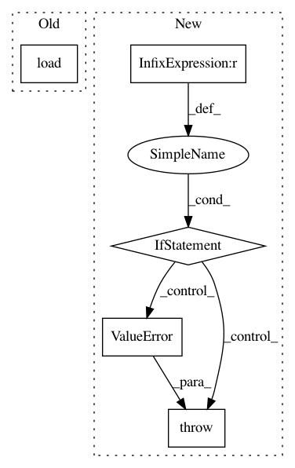

19a19478d2dc1cdff7321f156512f66dbd6c5dd6,dataset/batch.py,ImagesBatch,load,#ImagesBatch#Any#Any#,224
Before Change
Batch class for 2D images
@action
def load(self, src, fmt=None):
return super().load(src, fmt)
After Change
@action
def load(self, src, fmt=None):
Load data
if fmt is None:
if isinstance(src, tuple):
self._data = tuple(src[i][self.indices] if len(src) > i else None for i in range(3))
else:
self._data = src[self.indices], None, None
else:
raise ValueError("Unsupported format:", fmt)
return self
@action
def dump(self, dst, fmt=None):
In pattern: SUPERPATTERN
Frequency: 3
Non-data size: 5
Instances
Project Name: analysiscenter/batchflow
Commit Name: 19a19478d2dc1cdff7321f156512f66dbd6c5dd6
Time: 2017-06-07
Author: rhudor@gmail.com
File Name: dataset/batch.py
Class Name: ImagesBatch
Method Name: load
Project Name: facebookresearch/poincare-embeddings
Commit Name: 5f465041619a63bf1de99c55d1298865bf70fd9e
Time: 2020-01-07
Author: mattle@fb.com
File Name: embed.py
Class Name:
Method Name: async_eval
Project Name: snorkel-team/snorkel
Commit Name: 44f3798c1a46516708988324751ffa3c89f3ff0d
Time: 2016-09-04
Author: stephenhbach@gmail.com
File Name: snorkel/annotations.py
Class Name: AnnotationManager
Method Name: create